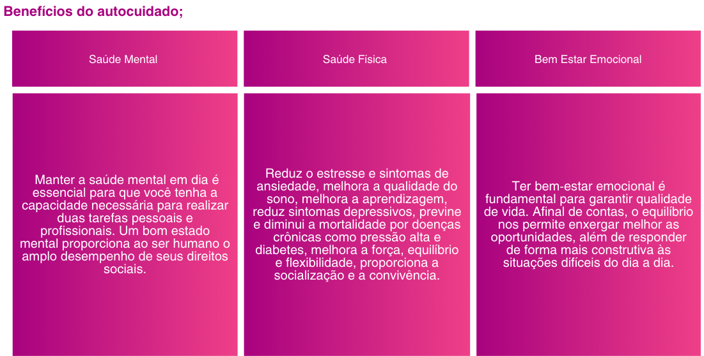

Autocuidado oque é?
Autocuidado : é um conjunto de práticas intencionais que visam cuidar da saúde física, mental e emocional. Inclui atividades como manter uma alimentação saudável, exercitar-se, meditar, garantir um sono adequado e cultivar relacionamentos positivos. Essencial para prevenir doenças e reduzir o estresse, o autocuidado promove o bem-estar e melhora a qualidade de vida, sendo uma forma de valorização pessoal.
Ver outros trabalhos »VISÂO GERAL: O autocuidado é um conceito essencial para manter o equilíbrio e a saúde em nossas vidas ocupadas. Mas o que exatamente é autocuidado? É o processo de tomar medidas para preservar ou melhorar a nossa saúde física, mental e emocional. Praticar o auto
-

Frases de motivação
"Cuidar de si mesmo não é um ato de egoísmo, mas uma necessidade." Audre Lorde
-
"Você não pode servir de um copo vazio. Cuide de si mesmo primeiro." Jennifer Williamson .
-
"A sua saúde mental é uma prioridade. A sua felicidade é essencial. O seu bem-estar é fundamental." Anônimo